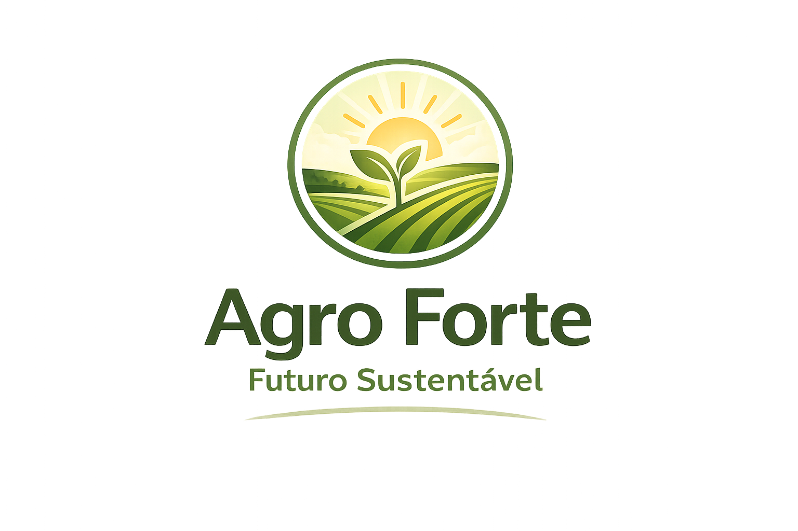
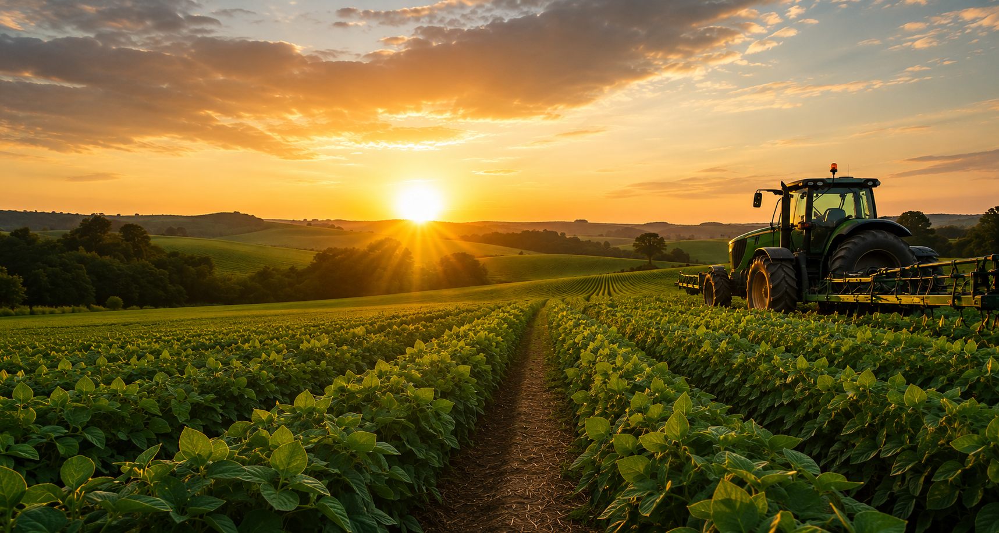
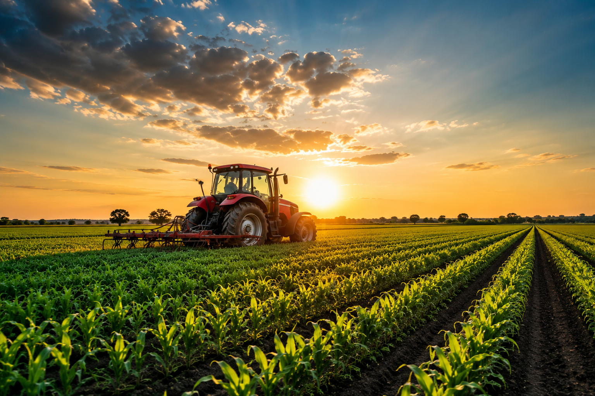
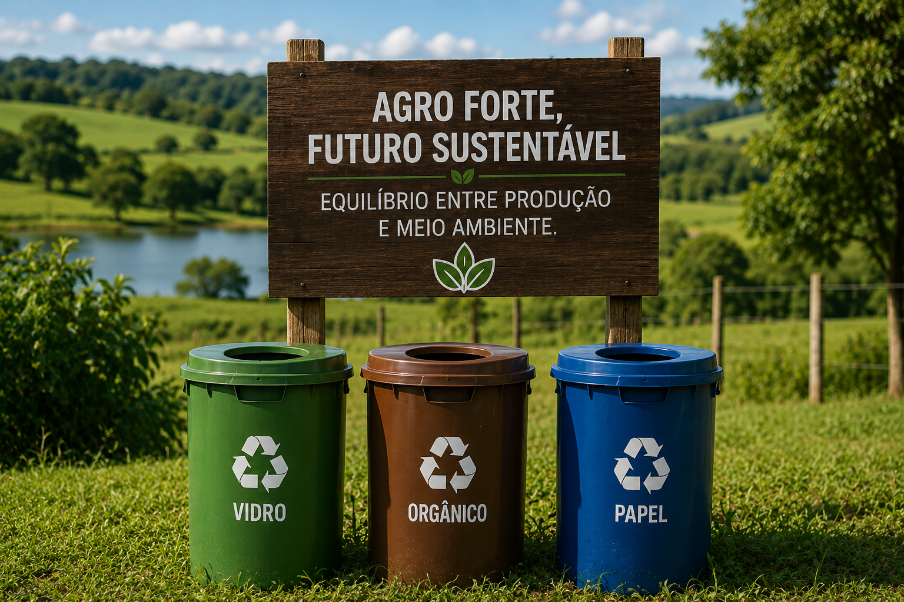
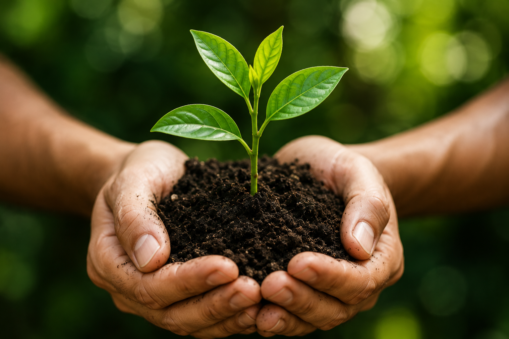

Equilíbrio entre produção agrícola, preservação ambiental e qualidade de vida para as futuras gerações.


Produção agrícola com responsabilidade ambiental e social.

Reutilização de recursos para reduzir impactos ambientais.

Preservação dos ecossistemas e da biodiversidade.
Redução de resíduos
Economia de água
Compromisso ambiental